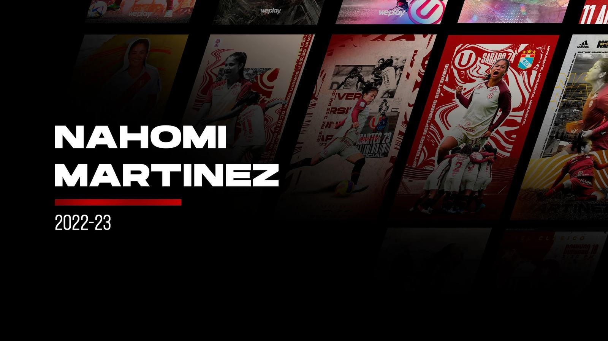

EN VIVOCH 02
Esteban GuillenEditor de video y videógrafo · Diseñador gráfico · Miami, FL
Ahora en pantalla
MercyMe 2025Fotografía en vivo · 22 fotografías
Al aire
1,3M+ vistas en video políticoEditor de video y videógrafo en Harris Media Group60 fotos de conciertos: MercyMe, Crowder, for KING & COUNTRY53 afiches para el fútbol peruanoQatar 2022: 37 piezasDesde 2018 · De Lima a MiamiDisponible como autónomo y a tiempo completo1,3M+ vistas en video políticoEditor de video y videógrafo en Harris Media Group60 fotos de conciertos: MercyMe, Crowder, for KING & COUNTRY53 afiches para el fútbol peruanoQatar 2022: 37 piezasDesde 2018 · De Lima a MiamiDisponible como autónomo y a tiempo completo
Presentación
Edito, grabo, diseño y fotografío piezas que salen al aire: spots de campaña con cientos de miles de vistas, conciertos en vivo, días de partido y marcas que publican todos los días.
Guía de programación · 2018 — hoy
Ocho años
al aire.
Trayectoria y proyectos por canal. Pasa por un programa para verlo en la ventana.
Canal
201820192020202120222023202420252026
CVTrayectoria
Harris Media GroupEditor de video y videógrafoIndependienteFotógrafo de conciertosClubes, jugadores y marcasDiseñador gráfico independienteDigitalia TECDiseñador gráficoArturo's BurgerDiseñador gráficoSoporte Total GUIMI S.A.Diseñador gráfico01Video político
02Fotografía en vivo
03Diseño deportivo
04Branding y redes
05Web y UI
06Gaming
Destacados
Doce
episodios.
Arrastra la tira o usa las flechas.
00:00:07:00
CH 01 · Video políticoSam Gallucci & NH Senate Republicans900K+ vistas · 2026
00:00:20:07
CH 01 · Video políticoBobby Charles for Maine Governor436K+ vistas · 2026
 00:00:33:14
CH 02 · Fotografía en vivoMercyMe 202522 fotografías · 2026
00:00:33:14
CH 02 · Fotografía en vivoMercyMe 202522 fotografías · 2026
 00:00:46:21
CH 02 · Fotografía en vivoCrowder Live22 fotografías · 2026
00:00:46:21
CH 02 · Fotografía en vivoCrowder Live22 fotografías · 2026
 00:00:59:03
CH 02 · Fotografía en vivofor KING & COUNTRY16 fotografías · 2026
00:00:59:03
CH 02 · Fotografía en vivofor KING & COUNTRY16 fotografías · 2026
 00:01:12:10
CH 03 · Diseño deportivoMatchday's 2022–2322 afiches · 2023
00:01:12:10
CH 03 · Diseño deportivoMatchday's 2022–2322 afiches · 2023
 00:01:25:17
CH 03 · Diseño deportivoNahomi Martínez Matchday's16 afiches · 2023
00:01:25:17
CH 03 · Diseño deportivoNahomi Martínez Matchday's16 afiches · 2023
 00:01:38:24
CH 03 · Diseño deportivoLuis Benites Matchday's15 afiches · 2023
00:01:51:06
CH 04 · Branding y redesQatar 202237 piezas · 2022
00:02:04:13
CH 04 · Branding y redesPhyso · Centro de fisioterapia30 publicaciones · 2024
00:01:38:24
CH 03 · Diseño deportivoLuis Benites Matchday's15 afiches · 2023
00:01:51:06
CH 04 · Branding y redesQatar 202237 piezas · 2022
00:02:04:13
CH 04 · Branding y redesPhyso · Centro de fisioterapia30 publicaciones · 2024
 00:02:17:20
CH 05 · Web y UIZena Coffee Store2 pantallas · 2024
00:02:30:02
CH 06 · GamingOverlays Valorant Multicolor3 pantallas · 2022
00:02:17:20
CH 05 · Web y UIZena Coffee Store2 pantallas · 2024
00:02:30:02
CH 06 · GamingOverlays Valorant Multicolor3 pantallas · 2022
Formatos
Lo que
produzco.
- F01Video para campañasEdición, motion y versiones para redes de candidatos y causas.
- F02Fotografía en vivoConciertos y eventos: cobertura completa y entrega editada.
- F03Diseño deportivoMatchdays, fixtures, anuncios de fichaje y piezas de jugador.
- F04Branding y redesSistemas visuales para marcas y contenido mensual.
- F05Web y UILanding pages y tiendas diseñadas en Figma.